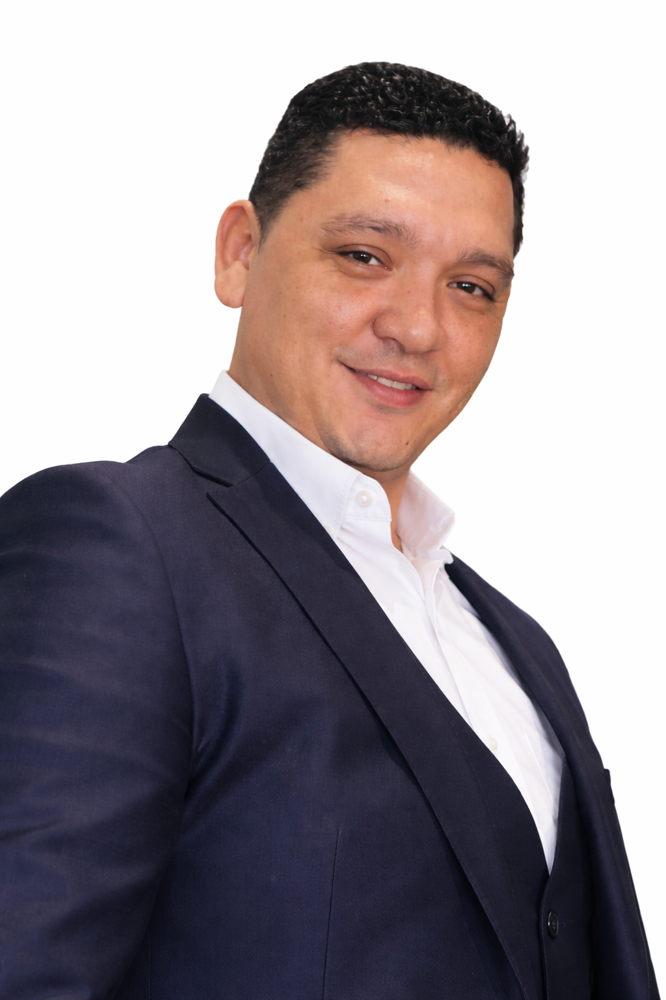

Nuestro CEO y Fundador
Wilmer Solórzano
Wilmer Solórzano es un líder venezolano con una profunda vocación de servicio y un compromiso sostenido con el desarrollo comunitario. Nacido en 1983 en el estado Guárico, Venezuela, su trayectoria personal y profesional ha estado marcada por una visión clara: servir, construir y transformar realidades a través de estructuras sostenibles.
Desde temprana edad demostró una fuerte sensibilidad social, así como un profundo sentido de responsabilidad familiar y comunitaria. Estos valores se consolidaron con el tiempo en una filosofía de vida orientada al cambio, la perseverancia y la acción, que hoy da forma a Fundación VNE.
Su liderazgo se fundamenta en principios éticos sólidos, una visión humanista del desarrollo y la convicción de que el progreso real se alcanza cuando las personas cuentan con oportunidades, herramientas y estructuras que les permitan avanzar por sí mismas.
Wilmer Solórzano concibe Fundación VNE no como un proyecto aislado, sino como un modelo institucional de largo alcance, diseñado para generar impacto estructural, escalar en el tiempo y contribuir activamente a la transformación social y económica de comunidades y países.